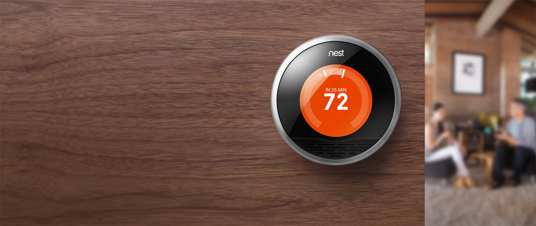
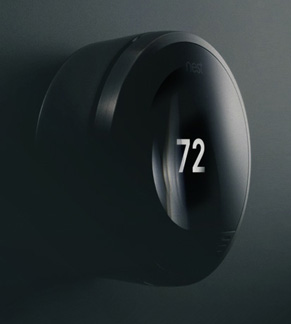
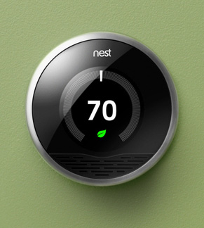
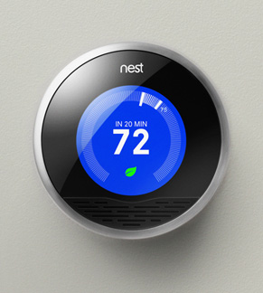

Nest | The Learning Thermostat
According to Nest 50% of your homes energy use is controlled by your thermostat. Focusing on simple design, Nest created an intelligent thermostat that learns from your cooling and heating habits to help you save energy.
The simplicity of design might remind you of an Apple product because Nest’s founder Tony Fadell was in charge of the first 18 generations of the iPod and the first 3 of the iPhone.
Nest’s amazing site was created by SF agency Odopod.